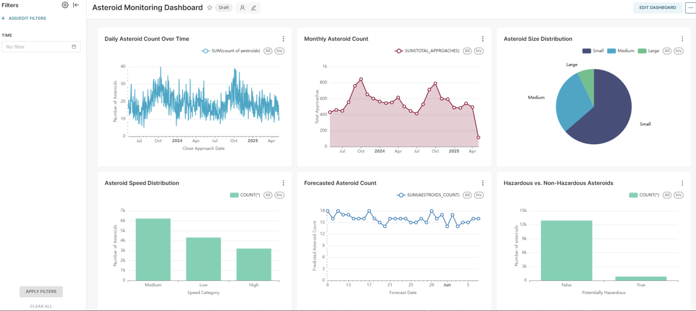

Project 06 · May 2025
Asteroid Analysis Data Warehouse
An always-up-to-date pipeline that turns NASA asteroid data into clear, explorable dashboards.
730days of history
4custom dbt macros
6+Superset dashboards
How it looks

Click the image to open it full size.
Architecture
Source
NASA NEO APInear-Earth objects
Orchestrate
Apache Airflowscheduled DAGs
Warehouse
Snowflake730-day history
Transform
dbt ELT4 custom macros · schema tests
Model
Forecastingruns tracked in MLflow
Serve
Apache Superset6+ dashboards
How it works
Data ingestion
Airflow DAGs pull from the NASA NEO API to keep a 730-day history in Snowflake with zero manual work.
ELT pipeline
dbt workflows with 4 custom macros for trajectory forecasting, with schema tests, validations and anomaly checks enforcing data quality.
Experiment tracking
MLflow versions every forecasting experiment for reproducible runs and model comparison.
Visualization
6+ Apache Superset dashboards on asteroid size, velocity and Earth-proximity trends.
Tech stack
Source
NASA NEO API
Orchestration
Apache Airflow
Warehouse
Snowflake
Transform
dbt
ML tracking
MLflow
BI
Apache Superset